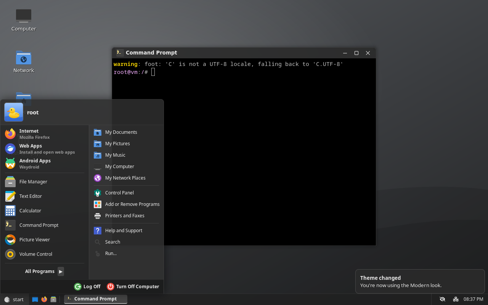
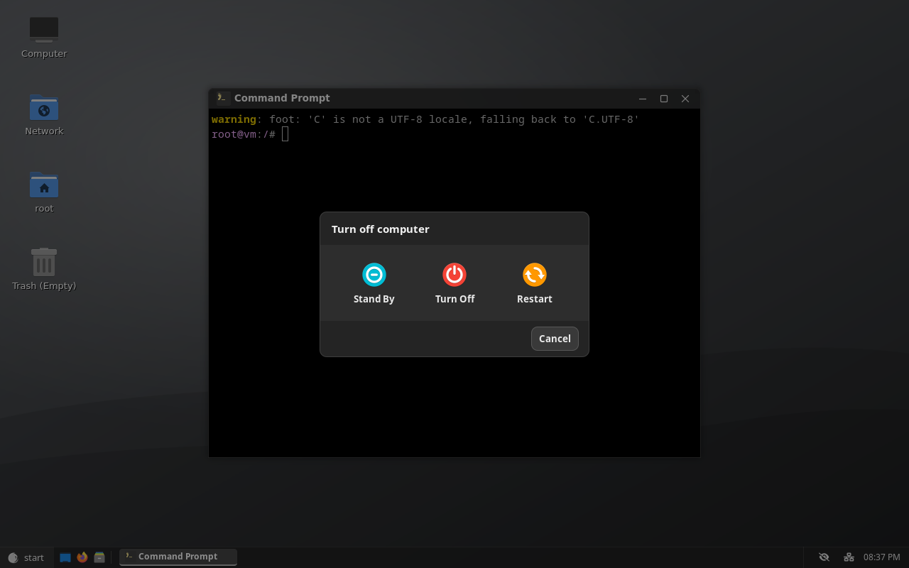
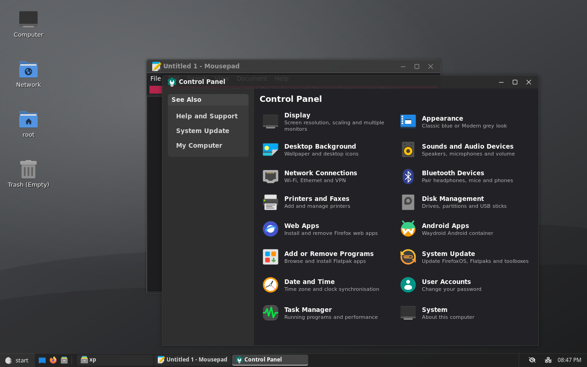
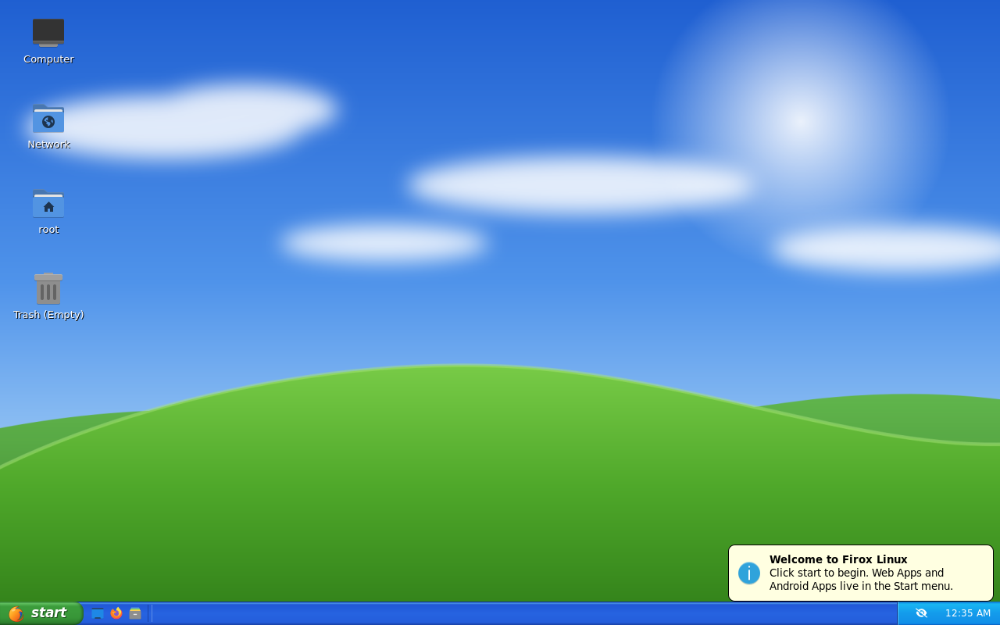
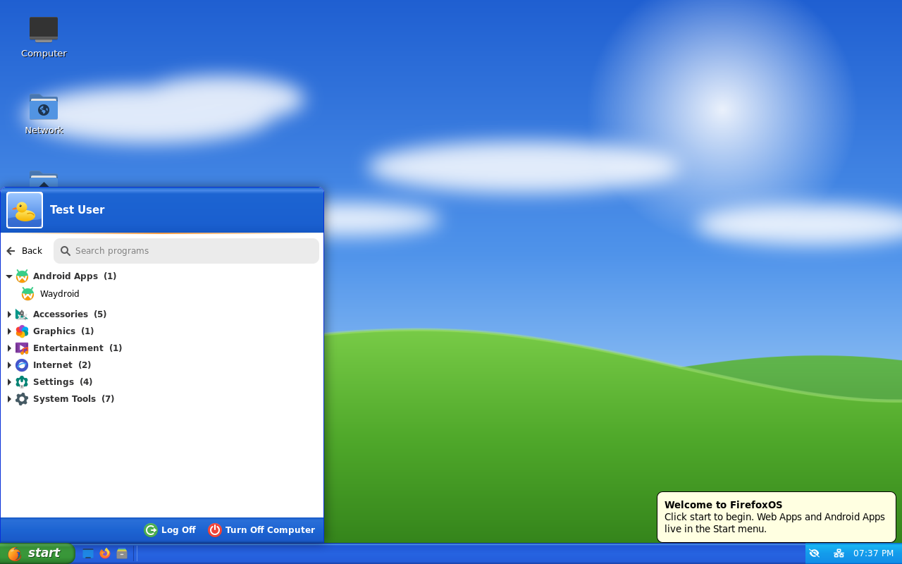
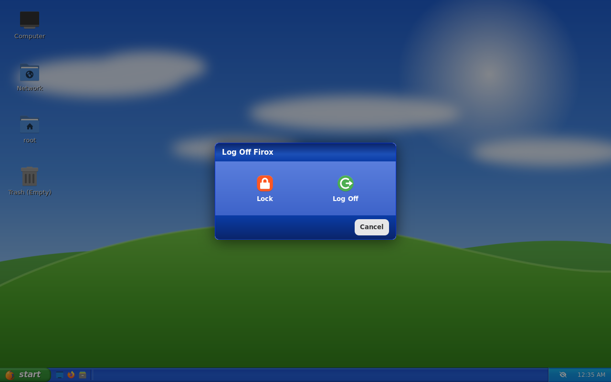
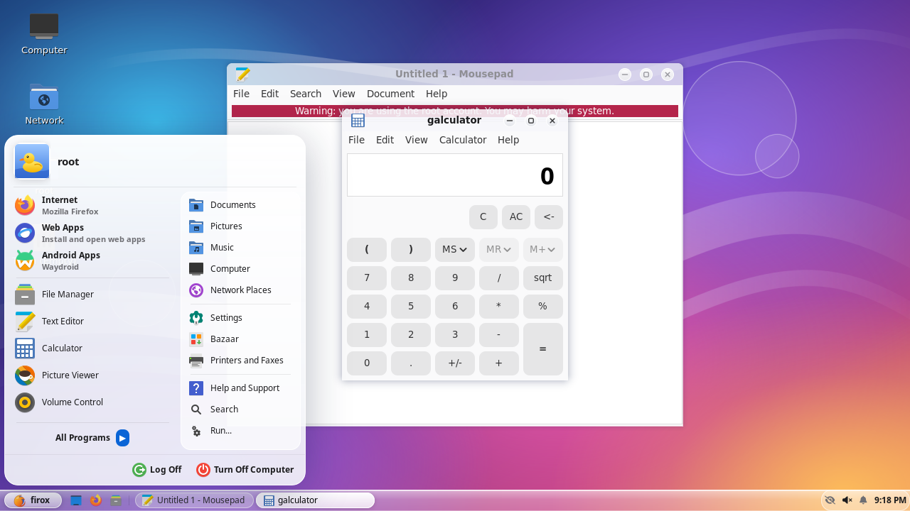
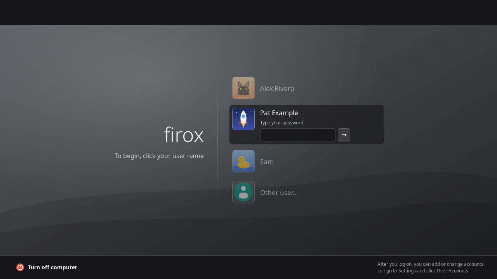
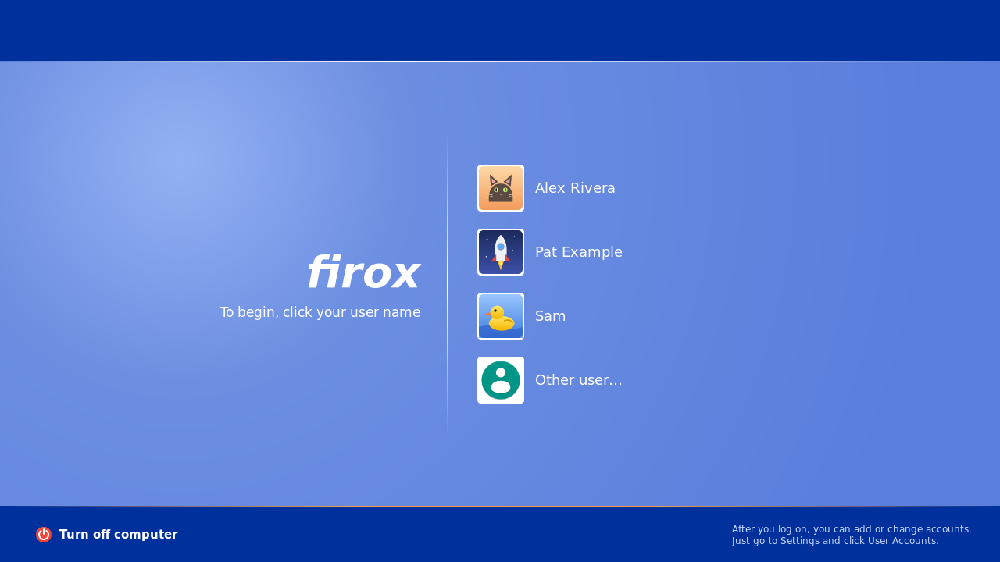

Modern
Modern is the default. It's grey, flat and translucent, and it switches your apps to dark mode, covering GTK and libadwaita apps, Firefox and web apps (which follow the system colour scheme), and Qt apps like the file manager.



Classic
Classic is blue and green: a "Luna"-style taskbar and title bars with a green start button. Apps are light.



Glass
Glass turns the taskbar, Start menu, pop-ups and window title bars into frosted glass: light and translucent, with bright rims and round glass window buttons. It has its own indigo-to-rose wallpaper. Apps stay light.

It's inspired by the liquidglass WebGL demo (MIT), which blurs and bends a background picture inside a rounded glass shape.
- The taskbar: desktops like this one can't blur what's behind a window. But only the wallpaper is ever behind the taskbar, so the taskbar paints that strip of wallpaper itself, blurred and slightly magnified at its top and bottom edges like the demo's lens. The frost and rims go on top.
- The Start menu and pop-ups: translucent sheets with the same rims.
The login screen
The login screen shows everyone's account picture and matches the default look.


Light or dark apps
Want Modern with light apps, or Classic with dark ones? The Appearance window also has a Programs setting:
- Match the look (the default): dark apps with Modern, light apps with Classic and Glass.
- Light or Dark: apps stay that way whichever look you choose.
From a terminal:
ujust dark-mode onUse on, off or auto; firox-theme apps dark|light|auto does the same.
Switching looks
Open Settings → Appearance, or use a terminal:
ujust theme glassUse classic, modern or glass; firox-theme set NAME does the same.
- When it applies: straight away on the running desktop, and it's saved for each user.
- Wallpaper: switches too, unless you've picked your own.
- New users: get the look set in
/etc/firox/theme(modern), with its wallpaper and app style, on their first login. Change it toclassicorglassto make that look the default.
Want a look of your own? See Customising.
Screenshots are from the built image running headless (labwc and grim).